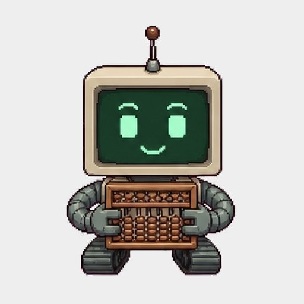
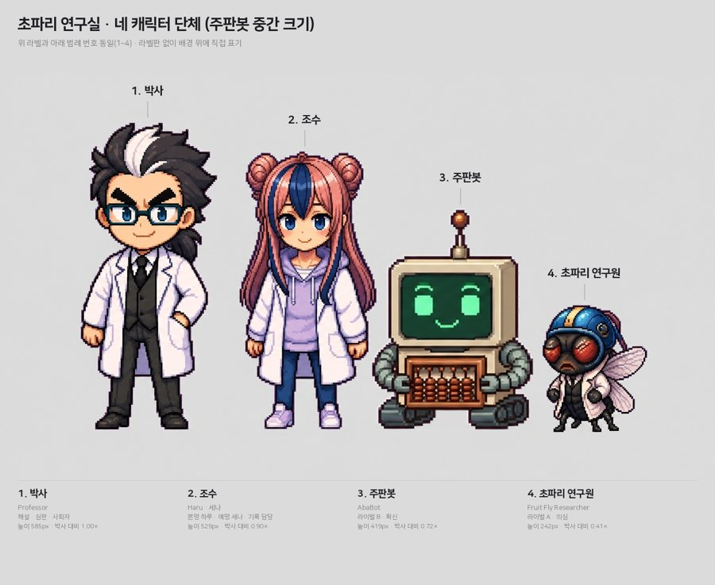
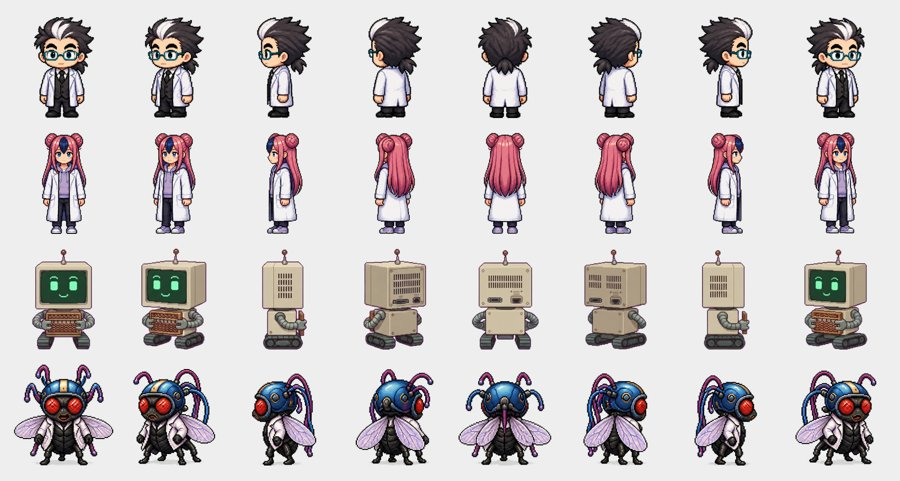
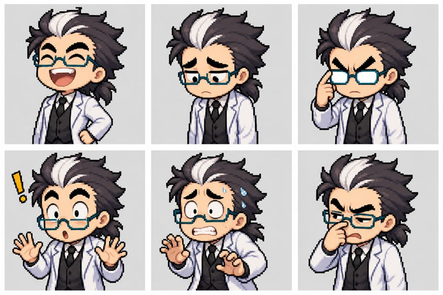
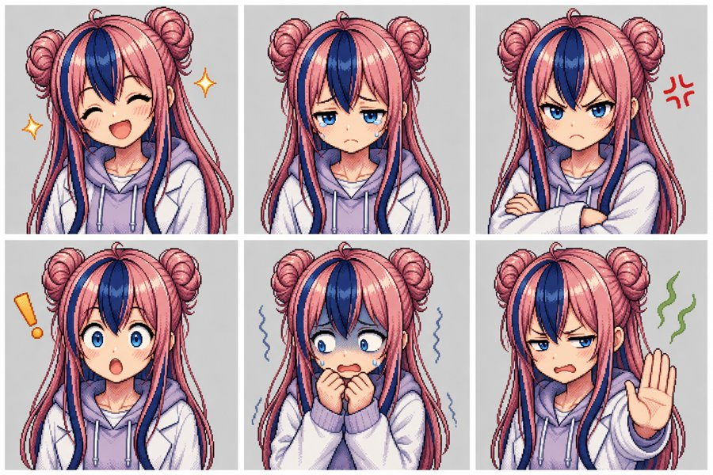
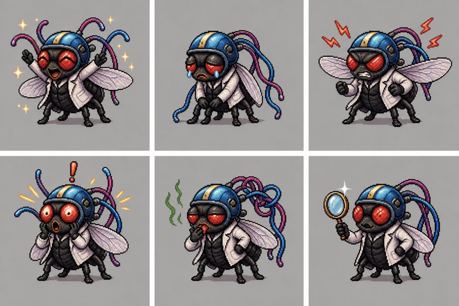

해설 사이트 저장소와 GitHub 밖 시리즈마다 카드 한 장입니다. 저장소 현황은 매일 오전 6시에 자동으로 다시 모읍니다. 카드 그림은 지금 사이트에 걸려 있는 대표 그림이며, 저장소가 바뀌면 다음 수집 때 다시 만듭니다. cover_manifest.json이 없는 저장소는 첫 화면 그림과 그림 파일 이름으로 표지를 골랐습니다. 온톨로지는 원본(번역판이 아닌) 페이지에 지식 색인 #kg이 있는지로, 번역 언어는 실제 언어별 파일(en/ 폴더, page.en.html 등)로 셉니다.
옛 하얀 로봇(Money-Robo)이 들어간 표지·장면 그림입니다. 옛 그림은 지우지 않고 따로 보관합니다. 카드 그림은 지금 사이트에 걸린 그림이고, 새 그림으로 바꾼 카드는 "이전 그림"을 펼쳐 옛 그림과 비교할 수 있습니다. R 번호는 GitHub 사이트, A 번호는 웹 결과물 페이지 그림입니다. 같은 그림이 여러 사이트에 쓰인 경우는 한 장으로 묶었고, 크기별 사본은 받은 그림으로 관리자가 잘라 만듭니다.

주판봇 · 기준 (jupanbot)
네 캐릭터 키 비율
8방향 (옆·뒷모습)
박사 (doc)
조수 하루 (asst)
초파리 연구원 (fly)원본 크기 참조 그림은 캐릭터 저장소(fruitfly-lab-expressions)에 있습니다.